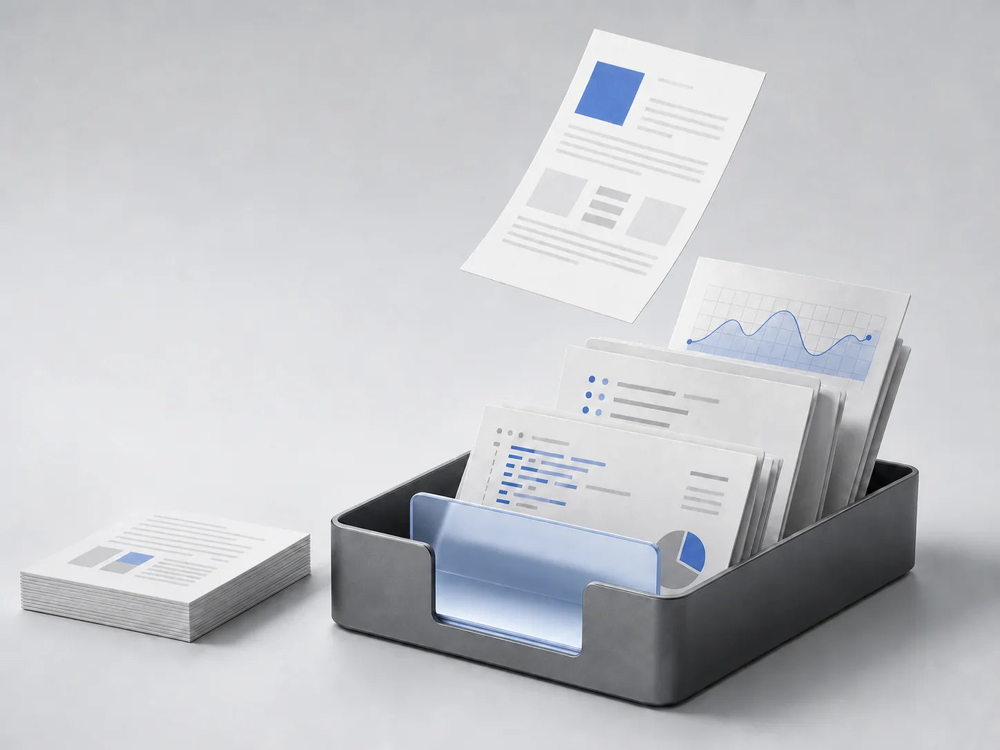
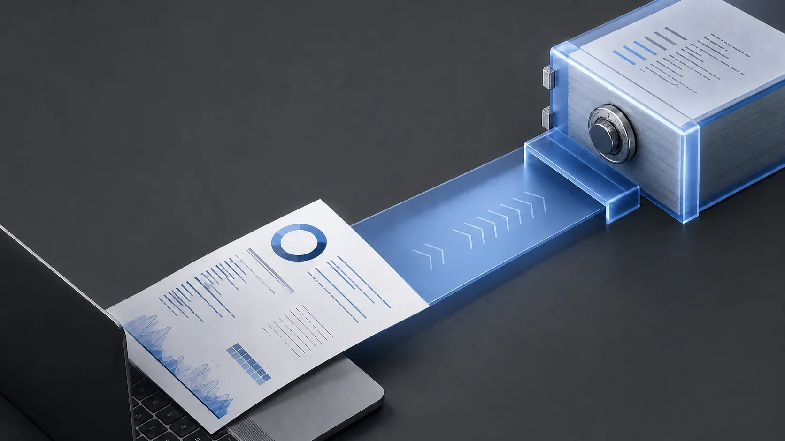

Publish into your local library
Give the CLI an HTML file, title, and type. The original bytes stay under your HTML Inbox home.
$ html-inbox publish ./report.html \
--title "Migration report" \
--type report
Local-first HTML library
Preview every report locally. Publish an unlisted library snapshot only when it needs to travel.
git clone https://github.com/deveshsangwan/html-inbox.git

One CLI stores, validates, and opens generated HTML without turning your machine into a public server.
Give the CLI an HTML file, title, and type. The original bytes stay under your HTML Inbox home.
Search by title, type, or source file. Every document opens inside an isolated preview frame.
Export a static snapshot or deploy the complete library to Cloudflare Pages under an unlisted capability path.
The viewer stays private to your machine. Remote output is static, portable, and owned by your Cloudflare account.

The local viewer binds to 127.0.0.1 and keeps its administrative surface off your network.
Reports, notes, and dashboards live in one focused library instead of scattered browser tabs.
Publishing creates a complete immutable input for deployment. There is no public admin server to secure or maintain.
Validation helps compatibility. Isolation is what protects the viewer.
Stored pages render in an iframe without same-origin access.
External URLs and inline event handlers are rejected except for documented integrations.
An unlisted snapshot is a bearer link, not authentication. Anyone with the path can read it.
Open source, dependency-free at runtime, and built for the reports your coding agent already makes.